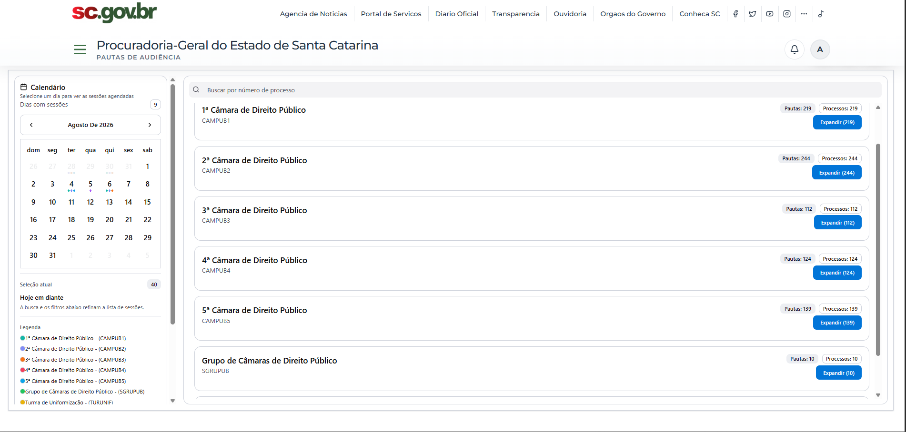
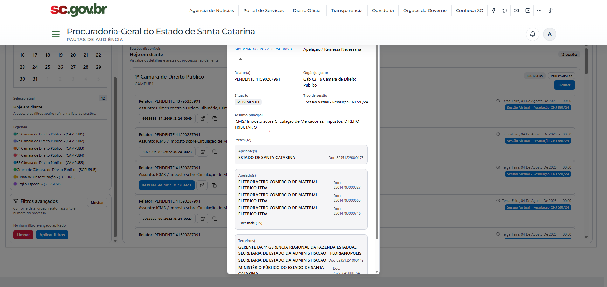

Módulo 07
Pautas de Audiência
Consolida as pautas de julgamento dos órgãos julgadores num calendário único. O sistema importa sessões, processos, partes e assuntos direto do tribunal por webservice SOAP, organiza tudo por câmara, relator, assunto e data, e permite localizar um processo específico com sua classe, situação, tipo de sessão e o quadro completo de partes — substituindo a conferência manual de pautas publicadas.

O que entrega
- Calendário de sessões com marcação colorida por órgão julgador
- Pautas agrupadas por câmara, com contagem e expansão sob demanda
- Busca por número de processo e filtros de data, órgão, relator e assunto
- Detalhe do processo com classe, situação, tipo de sessão e assunto principal
- Quadro de partes: apelantes, apelados e terceiros com documentos
- Importação automática das pautas publicadas pelo tribunal
Frontend
Backend e dados
Integrações e operação
Cliente SOAP em zeep com xmltodict e BeautifulSoup importa sessões, processos, partes e assuntos; cada carga fica registrada em DocumentoImportacao.
Pauta, Sessão, Processo, Magistrado, Relator, Órgão julgador, Assunto, Classe e Parte — o suficiente para reconstruir a pauta completa e cruzar por qualquer eixo.
Sem login próprio: a sessão vem da Plataforma PGE. Em desenvolvimento, frontend, backend e db sobem em 3003, 8003 e 5435.
Galeria do módulo
Telas reais do sistema com as pautas importadas do tribunal.
